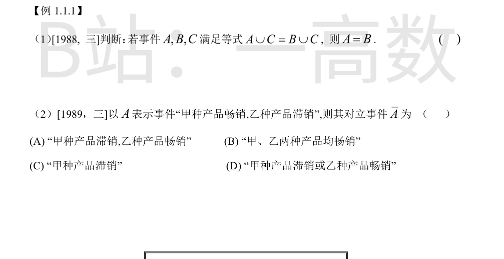
集合运算中消去律对并运算不成立。反例：取 C=Ω（必然事件），则对任意 A,B 都有 A∪C=B∪C=Ω，但完全可以有 A≠B。又如 A⊂C 且 B⊂C 时等式恒成立而 A,B 任意不同。故该命题不成立，判断为「错误」。
设 A_1=「甲畅销」，A_2=「乙畅销」，则 A=A_1\bar A_2。由德摩根律：$$\bar A=\overline{A_1\bar A_2}=\bar A_1\cup A_2$$即「甲种产品滞销 或 乙种产品畅销」。故选 (D)。
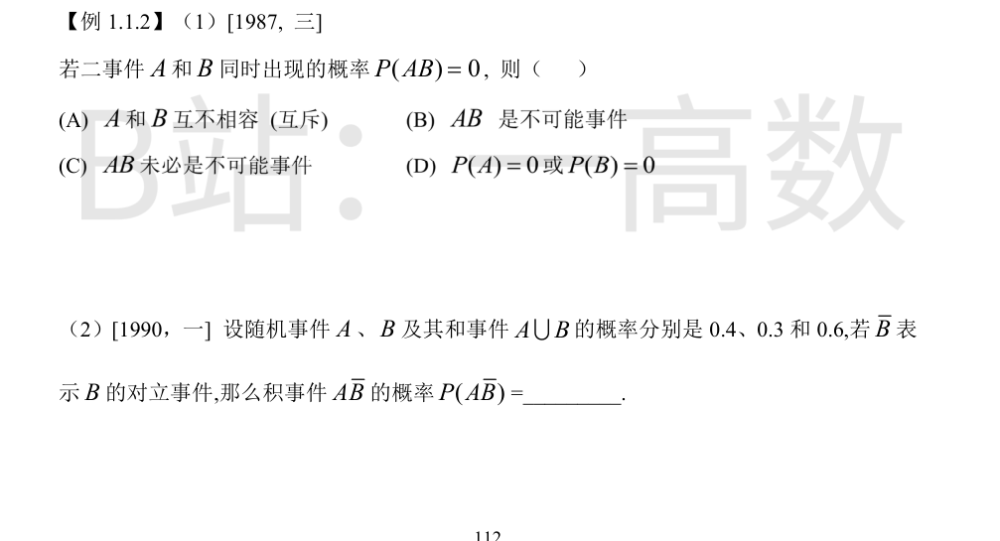
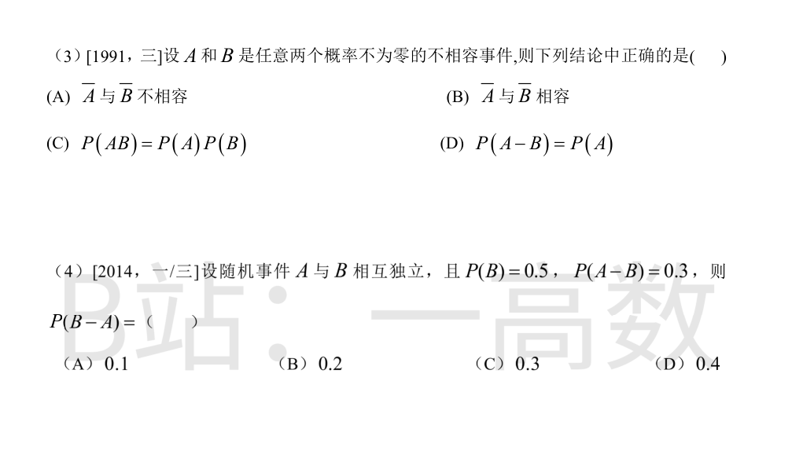
P(AB)=0 只表明 AB 的概率为零，未必有 AB=\varnothing。反例（几何概型）：向 [0,1] 均匀投一点，A={x\le 1/2}，B={x\ge 1/2}，则 AB={1/2}，P(AB)=0 但 AB\ne\varnothing，且 P(A)=P(B)=1/2\ne0。故 (A) 互斥、(B) 不可能事件、(D) P(A)=0 或 P(B)=0 都不必然成立；AB 未必是不可能事件，选 (C)。
由加法公式：$$P(A\cup B)=P(A)+P(B)-P(AB)\Rightarrow 0.6=0.4+0.3-P(AB)\Rightarrow P(AB)=0.1$$于是$$P(A\bar B)=P(A)-P(AB)=0.4-0.1=0.3$$
AB=\varnothing，故 P(AB)=0。(C)：P(A)P(B)>0\ne P(AB)，不成立。 (A)(B)：\bar A\bar B=\overline{A\cup B}；若 A\cup B=\Omega（如 B=\bar A），则 \bar A 与 \bar B 不相容；若 P(A)+P(B)<1，则 \bar A\bar B\ne\varnothing，二者相容——两种情形都可能，(A)(B) 均不必然。(D)：$$P(A-B)=P(A)-P(AB)=P(A)-0=P(A)$$成立，选 (D)。
由独立性：$$P(A-B)=P(A)-P(AB)=P(A)-P(A)P(B)=0.5\,P(A)=0.3\Rightarrow P(A)=0.6$$于是 P(AB)=0.6\times0.5=0.3，$$P(B-A)=P(B)-P(AB)=0.5-0.3=0.2$$选 (B)。
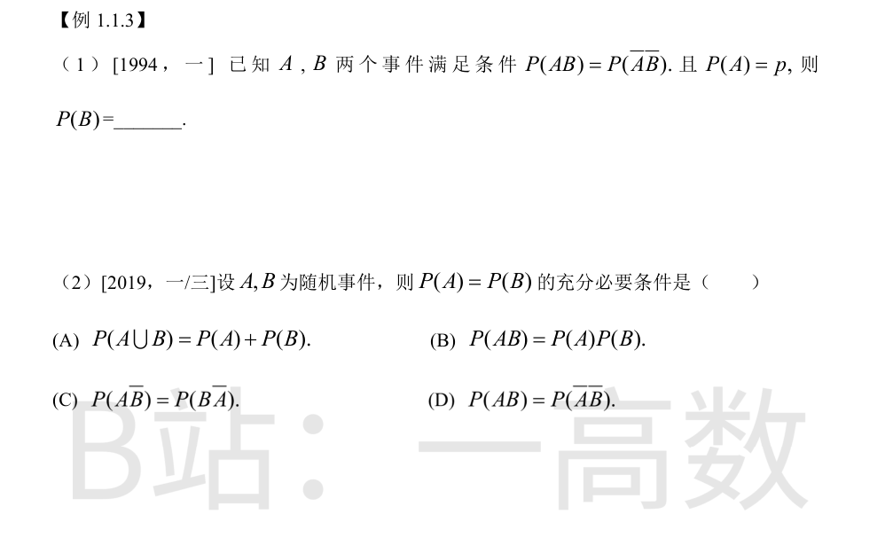
$$P(\bar A\bar B)=P(\overline{A\cup B})=1-P(A\cup B)=1-P(A)-P(B)+P(AB)$$由条件 P(AB)=P(\bar A\bar B)：$$P(AB)=1-p-P(B)+P(AB)\Rightarrow 0=1-p-P(B)\Rightarrow P(B)=1-p$$
$$P(A\bar B)=P(A)-P(AB),\qquad P(B\bar A)=P(B)-P(AB)$$故 P(A\bar B)=P(B\bar A)\iff P(A)=P(B)，且此推理可逆，是充要条件，选 (C)。 (A)\iff P(AB)=0；(B)\iff A,B 独立；(D)：P(AB)=P(\overline{A\cup B})=1-P(A)-P(B)+P(AB)\iff P(A)+P(B)=1，均不是 P(A)=P(B) 的充要条件。
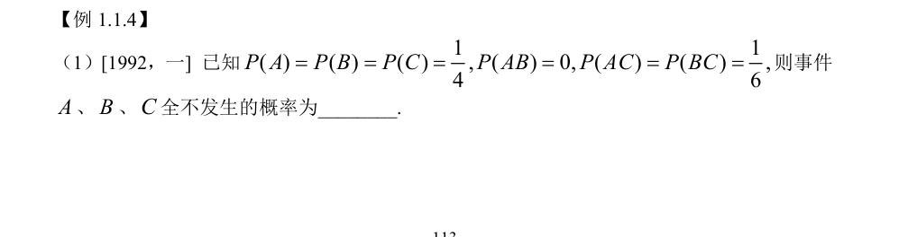
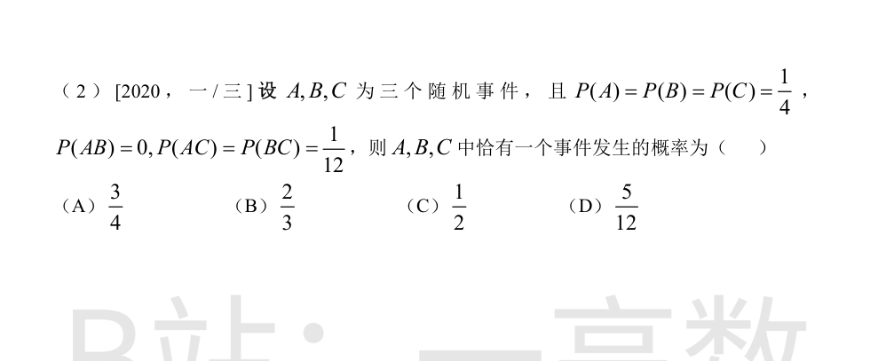
因 ABC\subseteq AB 且 P(AB)=0，故 P(ABC)=0。由容斥原理：$$P(A\cup B\cup C)=\frac34-0-\frac16-\frac16+0=\frac5{12}$$于是$$P(\bar A\bar B\bar C)=1-P(A\cup B\cup C)=1-\frac5{12}=\frac7{12}$$
由 P(AB)=0 得 P(ABC)=0。仅 A 发生：$$P(A\bar B\bar C)=P(A)-P(AB)-P(AC)+P(ABC)=\frac14-0-\frac1{12}=\frac16$$仅 B 发生：同理 $\frac14-0-\frac1{12}=\frac16$。仅 C 发生：$$P(\bar A\bar B C)=P(C)-P(AC)-P(BC)+P(ABC)=\frac14-\frac1{12}-\frac1{12}=\frac1{12}$$恰有一个发生：$$\frac16+\frac16+\frac1{12}=\frac5{12}$$选 (D)。
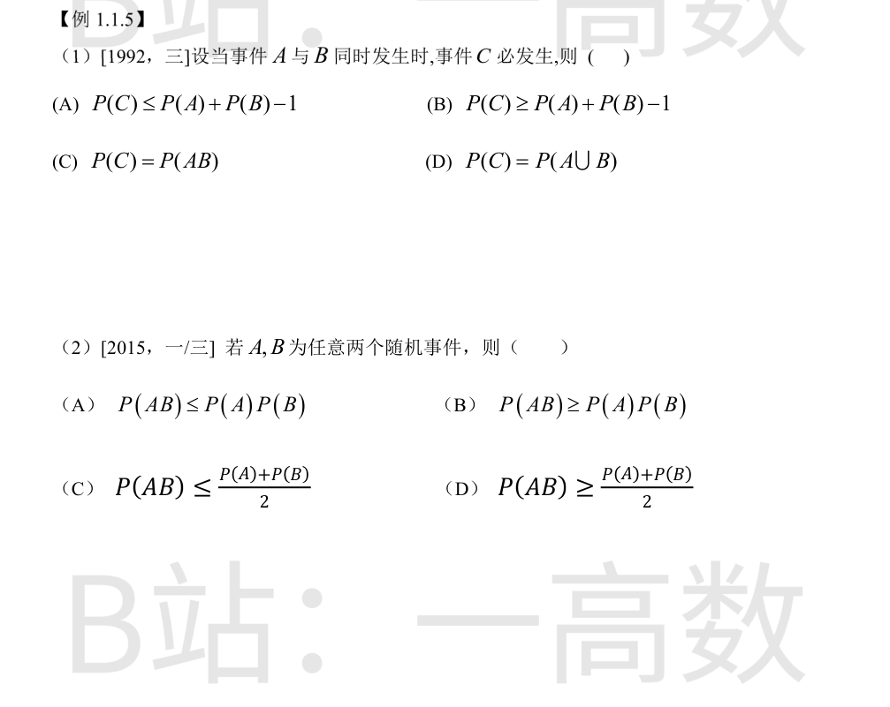
AB\subseteq C\Rightarrow P(C)\ge P(AB)。又由加法公式 P(A\cup B)=P(A)+P(B)-P(AB)\le 1，得$$P(AB)\ge P(A)+P(B)-1$$故 P(C)\ge P(A)+P(B)-1，选 (B)。（(C)(D) 的等式无依据；(A) 方向反。）
AB\subseteq A 且 AB\subseteq B，故$$P(AB)\le\min\{P(A),P(B)\}\le\frac{P(A)+P(B)}{2}$$恒成立，选 (C)。 (A)(B) 不恒成立：P(AB) 与 P(A)P(B) 的大小关系不定（如 A\subset B 时 P(AB)=P(A)\ge P(A)P(B)；独立时取等号）；(D) 显然可与 (C) 矛盾，不恒成立。
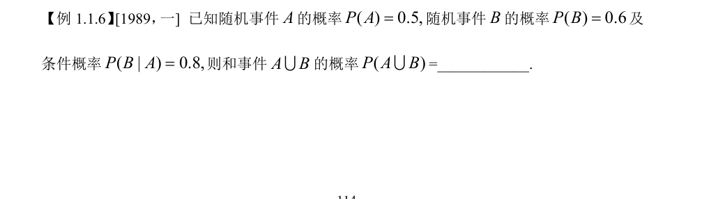
由乘法公式：$$P(AB)=P(A)P(B|A)=0.5\times0.8=0.4$$由加法公式：$$P(A\cup B)=P(A)+P(B)-P(AB)=0.5+0.6-0.4=0.7$$
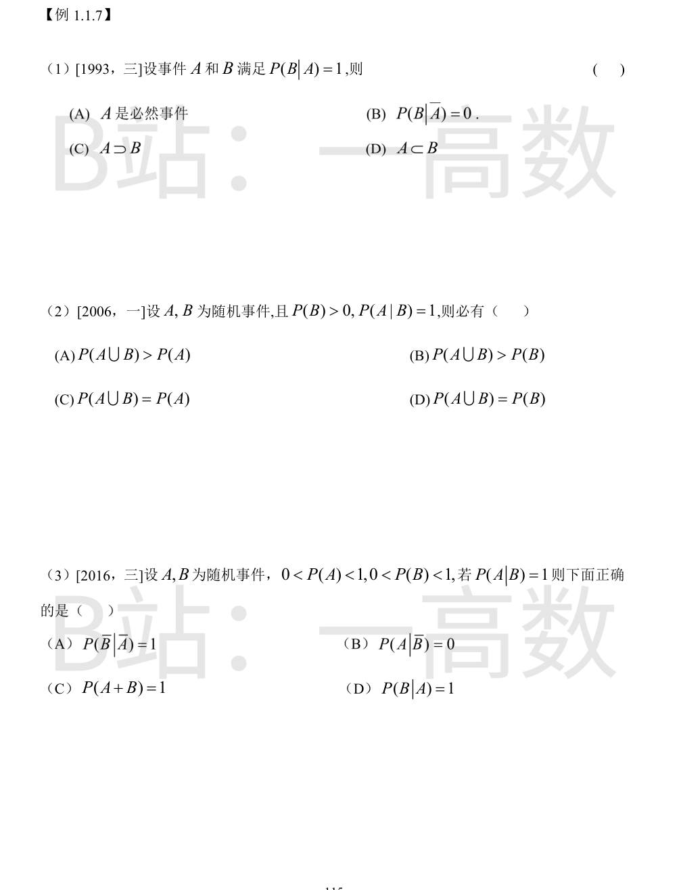
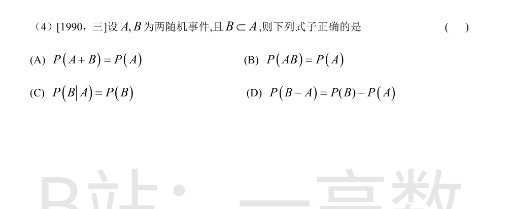
$$P(B|A)=\frac{P(AB)}{P(A)}=1\Rightarrow P(AB)=P(A)$$即 AB=A（至多差零概率集），故 A\subseteq B，选 (D)。 (A) 不必然：P(A) 可小于 1（如 A\subset B, A\ne\Omega）；(B)(C) 由条件推不出。
$$P(A|B)=\frac{P(AB)}{P(B)}=1\Rightarrow P(AB)=P(B)\Rightarrow B\subseteq A$$于是 A\cup B=A，故 P(A\cup B)=P(A)，选 (C)。
$$P(A|B)=1\Rightarrow P(AB)=P(B)\Rightarrow B\subseteq A\Rightarrow \bar A\subseteq \bar B$$故 \bar A\bar B=\bar A，且 P(\bar A)=1-P(A)>0，于是$$P(\bar B|\bar A)=\frac{P(\bar B\bar A)}{P(\bar A)}=\frac{P(\bar A)}{P(\bar A)}=1$$选 (A)。 (B) 不然：B\subsetneq A 时 P(A\bar B) 可为正；(C) P(A\cup B)=P(A)<1；(D) P(B|A)=P(B)/P(A)<1。
B\subset A\Rightarrow A+B=A\cup B=A，故$$P(A+B)=P(A)$$选 (A)。 (B)：P(AB)=P(B)<P(A)；(C)：P(B|A)=P(AB)/P(A)=P(B)/P(A)\ne P(B)（除非 P(A)=1）；(D)：P(B-A)=P(\varnothing)=0，而 P(B)-P(A)<0（除非 A=B），不成立。
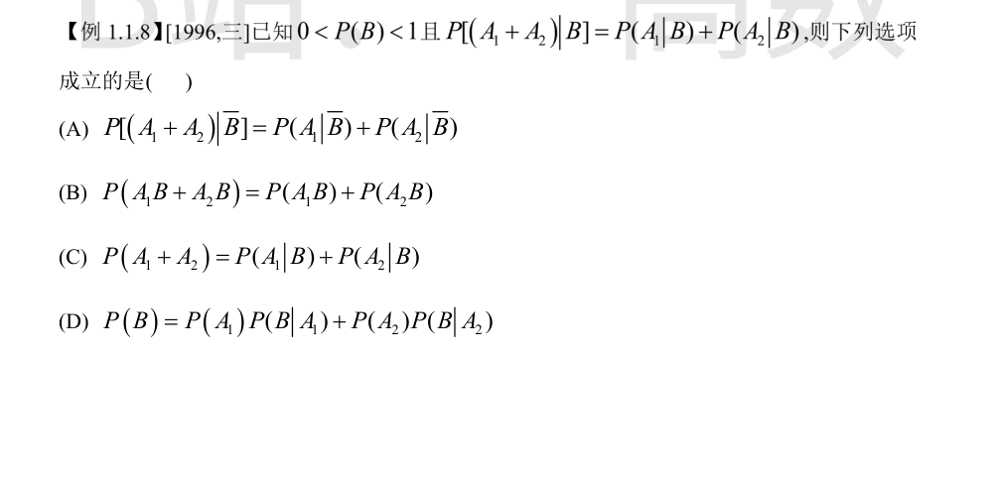
将条件两边乘 P(B)：$$P[(A_1\cup A_2)B]=P(A_1B)+P(A_2B)$$而 $P[(A_1\cup A_2)B]=P(A_1B\cup A_2B)=P(A_1B)+P(A_2B)-P(A_1A_2B)$，比较得$$P(A_1A_2B)=0$$ (B)：$$P(A_1B+A_2B)=P(A_1B\cup A_2B)=P(A_1B)+P(A_2B)-P(A_1A_2B)=P(A_1B)+P(A_2B)$$成立，选 (B)。 (A)：条件只涉及 B 发生下的情形，对 \bar B 无约束，推不出；(C)：左端与右端量纲含义不同，无此结论；(D)：形如全概率公式，需 A_1,A_2 与 B 的特殊分解关系，由本条件推不出。
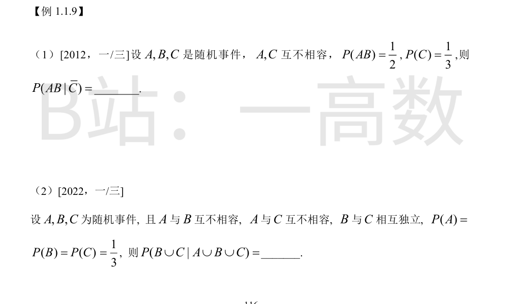
A,C 互不相容即 A\subseteq\bar C，而 AB\subseteq A，故 AB\subseteq\bar C，即 ABC=\varnothing，$$P(AB\bar C)=P(AB)=\frac12$$于是$$P(AB|\bar C)=\frac{P(AB\bar C)}{P(\bar C)}=\frac{1/2}{1-1/3}=\frac{1/2}{2/3}=\frac34$$
P(AB)=P(AC)=0，P(BC)=P(B)P(C)=\frac19，ABC\subseteq AC\Rightarrow P(ABC)=0。$$P(B\cup C)=P(B)+P(C)-P(BC)=\frac13+\frac13-\frac19=\frac59$$$$P(A\cup B\cup C)=P(A)+P(B)+P(C)-P(AB)-P(AC)-P(BC)+P(ABC)=1-\frac19=\frac89$$故$$P(B\cup C|A\cup B\cup C)=\frac{P((B\cup C)(A\cup B\cup C))}{P(A\cup B\cup C)}=\frac{P(B\cup C)}{P(A\cup B\cup C)}=\frac{5/9}{8/9}=\frac58$$
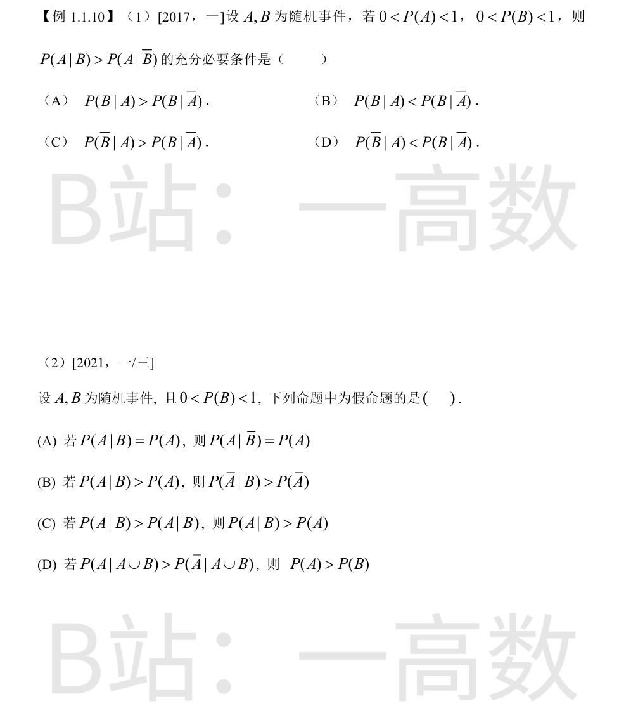
$$P(A|B)>P(A|\bar B)\iff\frac{P(AB)}{P(B)}>\frac{P(A\bar B)}{1-P(B)}$$两边乘 P(B)(1-P(B))>0：$$P(AB)(1-P(B))>P(B)(P(A)-P(AB))\iff P(AB)>P(A)P(B)$$再看 (A)：$$P(B|A)>P(B|\bar A)\iff\frac{P(AB)}{P(A)}>\frac{P(\bar A B)}{1-P(A)}\iff P(AB)(1-P(A))>P(A)(P(B)-P(AB))\iff P(AB)>P(A)P(B)$$两者等价于同一条件 P(AB)>P(A)P(B)，故为充要条件，选 (A)。
(A)：P(A|B)=P(A)\iff P(AB)=P(A)P(B)（独立），由独立性即得 P(A|\bar B)=P(A)，真命题。 (B)：P(A|B)>P(A)\iff P(AB)>P(A)P(B)，于是$$P(\bar A\bar B)=1-P(A)-P(B)+P(AB)>1-P(A)-P(B)+P(A)P(B)=P(\bar A)P(\bar B)$$即 P(\bar A|\bar B)>P(\bar A)，真命题。 (C)：P(A|B)>P(A|\bar B)\iff P(AB)>P(A)P(B)，则 P(A|B)=P(AB)/P(B)>P(A)，真命题。 (D)：P(A|A\cup B)+P(\bar A|A\cup B)=1，条件等价于 P(A|A\cup B)>1/2，即$$P(A)>P(A\cup B)-P(A)=P(B\bar A)=P(B)-P(AB)$$只能得到 P(A)+P(AB)>P(B)，推不出 P(A)>P(B)。反例：P(A)=0.3, P(B)=0.5, P(AB)=0.25（满足 0\le P(AB)\le\min\{P(A),P(B)\}，可构造），则 P(A\cup B)=0.55，P(A|A\cup B)=0.3/0.55\approx0.545>1/2 满足条件，但 P(A)=0.3<P(B)=0.5。故 (D) 为假命题，选 (D)。